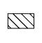

WASHER NOZZLE (for Front Side) > INSTALLATION |
| 1. INSTALL WASHER NOZZLE SUB-ASSEMBLY |
Connect a new washer nozzle sub-assembly to the washer hose.
Attach the 2 claws to install the washer nozzle sub-assembly.
| 2. INSPECT WASHER NOZZLE SUB-ASSEMBLY |
With the engine running, check the position that the washer fluid hits the windshield.
| *1 | Ceramic Line | - | - |
| *a | Upper Limit | *b | Standard |
| *c | Lower Limit | - | - |
|  | Washer Fluid Spray Area | - | - |
| Area | Specified Condition | Area | Specified Condition |
| A | 78 mm (3.07 in.) | B | 213 mm (8.39 in.) |
| C | 158 mm (6.22 in.) | D | 124 mm (4.88 in.) |
| 3. ADJUST WASHER NOZZLE SUB-ASSEMBLY |
Select a washer nozzle so that the contact area is within the standard. Replace the washer nozzle with the selected one.
| *1 | Available Washer Nozzles | *2 | Washer Fluid Spray Angle |
| *3 | Part Number | - | - |